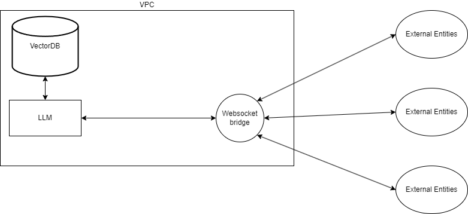

Why go for RAG?
Overview
In this project we choose a foundational model i.e. GPT or BERT and create an API that makes it easy to interact with the LLM.
Foundational model
We want a foundational model that can interact in the medical context. Some of the models considered here are :
- Medical Llama-8b - Optimized to address health related inquiries and trained on comprehensive medical chatbot dataset (Apache License 2.0) foundational model used here Meta-Llama-3-8b
- Llama3-OpenBioLLM-8B - fine tuned on corpus of high quality of biomedical data, 8 billion parameters. Incorporated the DPO data set
Approaches
To create a chat bot we have 2 approaches:
- Fine tuning existing foundational models on medical data set
- Create a Retrieval augmented generation framework which is used for retrieving facts from an external knowledge

Fine tuning existing foundation models on medical data set
- Incorporates the additional knowledge into the model itself
- Offers a precise, succinct output that is attuned to brevity.
- High initial cost
- Minimum input size
Retrieval Augmented Generation
- Augments the prompt with external data
- Provides an additional context during question answering.
- Possible collision among similar snippets during the retrieval process
- RAG has larger input size due to inclusion of context information ,output information tends to be more verbose and harder to steer.
Experiment Conclusion
GPT learned 47% of new knowledge with fine-tuning with RAG this number goes upto 72% and 74%.
Preferred approach
What we want?
- Fast Deployment option
Choice of Approach
RAG allows to create embeddings easily and allows for a fast deployment option.
Architecture

References
- https://arxiv.org/pdf/2401.08406